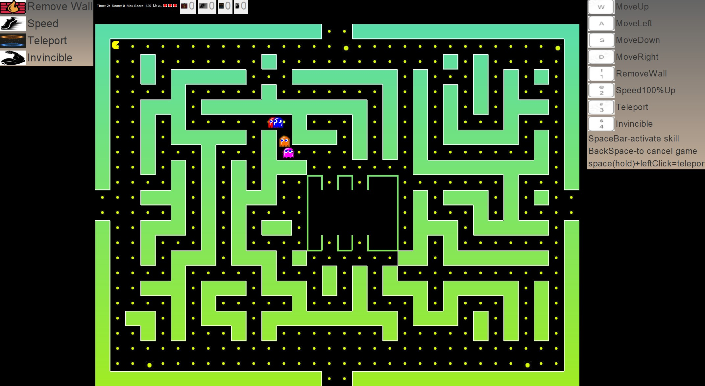

Pacman 2.0
A university project implementing a Pacman-style game with A* used for ghost pathfinding. The system was built as a multithreaded application with synchronized execution, in line with project requirements.

Software Engineer · Java & Spring
I design and build robust backend systems in the Java ecosystem – focused on clean architecture, scalability and real-world impact.
My name is Daniel Prokop. I’m a passionate Software Engineer with a strong focus on backend development and the Java ecosystem. I’m currently studying Computer Science at the Polish-Japanese Academy of Information Technology, where I’m expanding my expertise in software architecture, distributed systems, and modern development practices.
I hold several industry-recognized certifications, including Oracle Certified Associate and Professional (Java SE 8), as well as VMware Spring and Application certifications. These credentials reflect my commitment to mastering robust, scalable, and clean software development.
My technical strengths include Java, Spring Boot, Hibernate, SQL/NoSQL databases, microservices, Docker, Git, and cloud technologies such as Azure. I also work with JavaScript technologies like React and Node.js, which helps me understand full-stack workflows and build complete end-to-end solutions.
With a background in graphic design and years of international work experience, I bring creativity, adaptability, and strong communication skills to every project. I thrive in collaborative environments, enjoy solving complex problems, and continuously push myself to learn and improve.
I’m currently seeking opportunities to grow as a developer and contribute to meaningful, well-crafted software.
A selection of academic and personal projects showcasing my skills in Java, backend design, and problem solving.
A university project implementing a Pacman-style game with A* used for ghost pathfinding. The system was built as a multithreaded application with synchronized execution, in line with project requirements.

A simple library-management application designed to streamline the process of registering users, renting books for a fee, and handling different access roles. The system includes separate permissions for administrators, registered users, and guests, allowing each group to interact with the library according to its privileges.
Open to internship and junior roles, backend-oriented positions, and interesting side projects.
© Daniel Prokop. All rights reserved.